轻敌者，死于自己的自信
情境：隋元卿手握数十万大军与人质，认定武安侯必死无疑，对谢征「只带一千人」的异常毫不在意。
遇到这种情况，可以这样做
- 优势越大，越要留意反常的细节。
- 对手的「示弱」，可能正是钓你上钩的饵。
- 真正的杀局，往往藏在看似稳赢的一局里。
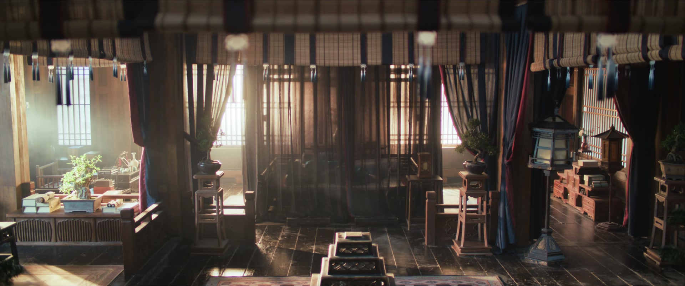
Drama Recap · 剧情图文总结
第 22 集 · 坝下之战
隋元卿挟人质布下坝下死局，武安侯谢征以千人诱敌、坝水灭十万军；樊长玉在采石场拜太傅为师，一支走签换来生路，也踏上女将之路的起点
第 22 集，坝下之战。樊长玉在采石场做苦役，阴差阳错拜了前工部尚书、当朝太傅为师，又靠一支签躲过溃坝的杀劫；另一头，武安侯谢征亲率一千济州军踏进隋元卿布下的死局。隋元卿以为胜券在握，却不知坝下之水，早已等着他的数十万大军。
开场即回放上一集尾声：樊长玉终于得知，她从雪地里背回的「言正」，正是武安侯谢征——堂堂侯爷，竟入赘了杀猪女。与此同时，隋元卿以「武安侯之女」为质，扬言要谢征以燕州相换。谢征不为所动，传令先锋营随他赶赴坝下，务必把人毫发无伤地带回。
剧里的鸡毛蒜皮，往往是人生的缩影。这些情节不只是故事——当你在现实中遇到同样的处境时，它们能提醒你：先做什么、别做什么、怎么说才有效。
情境：隋元卿手握数十万大军与人质，认定武安侯必死无疑，对谢征「只带一千人」的异常毫不在意。
情境：长玉靠爹爹教的「腰马合一」提起两三百斤的箩筐，换来了鸡腿，也换来了劳役们的另眼相看。
情境：被囚的夫人不吃绝食博同情那一套，反而吃饱养足力气，磨刀准备自保逃命。
情境：太傅要束脩、要磕头，长玉一句「我爱学习」便认下师父，从此多了一条保命的路。
情境：太傅换签被众人骂作自私，直到长玉走远才明白——留下才是等死，他把生路让给了徒弟。
情境：长玉已经失去太多亲人，宁可折返，也要让身边每一个人活下去。
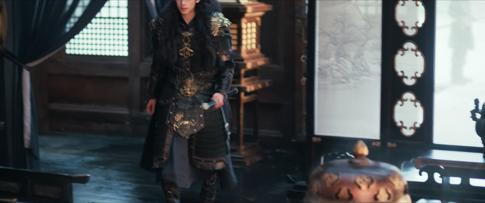
前情提要：上一集尾声，樊长玉终于得知，她从雪地里背回来的「言正」，正是武安侯谢征——堂堂侯爷，竟入赘了杀猪女。此话一出，众人皆惊。
谢征接斥候急报：隋元卿挟持人质，扬言要他以燕州相换，气焰愈发嚣张。谢征不为所动，传令先锋营随他赶赴坝下，务必把「本侯的女儿」毫发无伤地带回。
隋元卿与兄长定计：斥候来报谢征夜袭，灭了守寨士兵，他反倒叫好，下令全军备战，誓要以武安侯之死成就自己的「坝下传说」。他自恃身后千军万马、又有人质在手，志在必得。只有兄长看出反常——武安侯此来不见燕州军，只带了一千济州军，心中总有些惴惴不安。
关键台词 · KEY QUOTES

采石场的晚饭，劳役们争抢鸡腿。有人不服：凭什么一个黄毛丫头有鸡腿吃？有人答：人家一个人拖着两三百斤重的箩筐上山，想有肉吃，就得肯干活。
长玉道出诀窍：这是爹爹教的「腰马合一」——发力于地，从腰到腿一起用力，又省力又稳当。太傅赞她令尊是个智慧之人，她凭真本事在苦役里立住了脚。
太傅却从她鞋上黄泥变黑泥，识破她偷偷上山探过路。长玉坦言：挖出的山石太粗糙，定不是铺路用的；河水水位又偏低，恐怕是在修水坝。她只想弄明白坝修到哪一步、何时能走。太傅不多拦她，只请她明日黄昏再登顶，替他看上一看。
关键台词 · KEY QUOTES
宝儿问大人，什么时候才能把娘亲们救出来。大人哄她：你爹不会伤害你娘亲，这也是你娘亲的计策，等时机成熟了，你们就能见着面了。
趁夜，赵家母子按约定路线脱身。有人留下断后：我得拖住大公子，让你们脱身。此处还是坝下地界，不宜久留。母亲与萱儿、小主子互相叮嘱，务必照约定的路线先行出发，等时机成熟再会合。
大公子发现人质被放走，拷问内应：从你踏入山庄第一天起，就想骗我脱身？他偏不杀此人，命关进柴房、不许任何人靠近，又传赵勋来问。赵勋自称整日军务在身、将士可作证，坚称母亲与小主子是被贼王掳了去，定是贼王的计谋。大公子念他母子多年忠孝之义，暂且饶过，派人出去搜寻。
关键台词 · KEY QUOTES
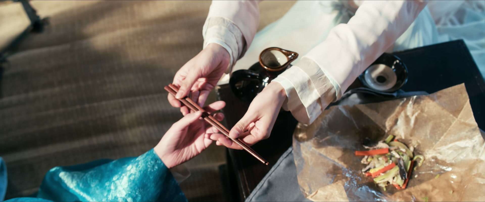
柴房里，一位被囚的夫人已经两天没吃东西，形容憔悴却不曾哭闹。丫鬟偷偷送来吃食：大公子派你来的？是我偷的，书房里只能偷到这些，您将就着吃。
丫鬟说起从前伺候过的一位老夫人，被老爷关在柴房，她眼睁睁看着人活活饿死，如今说什么也不愿再看着夫人走这条路，恳求夫人千万别死。夫人让她放心：我不会死的。
夫人却叫她以后别再送了——这些吃食若是被发现，连你也要危险了。她虽然身陷柴房，惦记的却是别人的性命，反复叮嘱丫鬟只管保全自己，往后莫再冒险。
关键台词 · KEY QUOTES
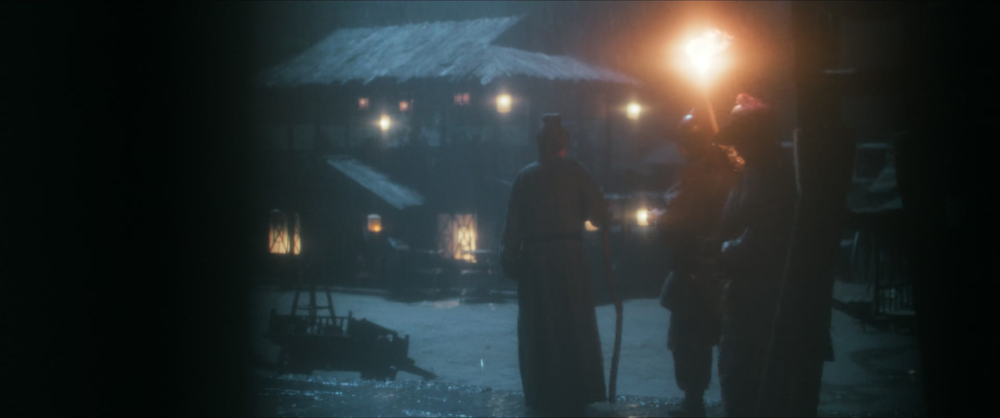
太傅求见将军，开门见山：敢问是您命人在坝上凿眼作业，难道是要溃坝放水吗？这一问，把暗中布置的杀招挑到了明面上，将军一时语塞，不敢再小看这位老者。
他自报家门——前工部尚书、当朝太傅，又指出春汛未至、水力不足，在此处作业难以奏效，应在前汛四处凿眼方可成事，并追问：溃坝放水，坝上的官兵与劳役，何去何从？
将军听他点破凿眼之法，神色骤变。太傅深知此坝一旦凿开必死伤无数，但也明白这是灭敌之计——只为往后的太平，让更多百姓免受战火之苦。
关键台词 · KEY QUOTES
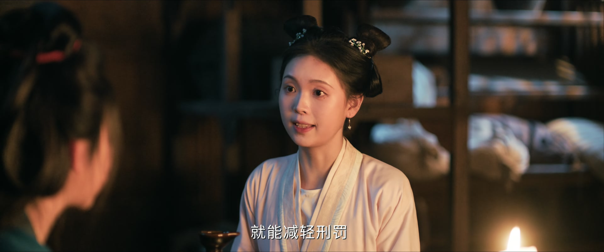
丫鬟捧着一碗花好水来送，笑道：您跟奴婢从前伺候过的那些夫人不一样。同样是被关被罚，这位夫人却偏偏不肯做那副哀哀切切的样子。
从前那些夫人受了责罚便茶饭不思，指望着饿瘦了让老爷心疼——靠人心疼才能活。夫人却听不入耳：靠谁都不如靠自己，我得吃饱了，才有力气逃跑。
丫鬟惊见她不知何时摸来一把柴房里的刀，还磨尖了些，劝她千万别想不开。夫人笑她多虑：放心，我不会寻死的。日后不管发生什么，你只管自己逃命，不用管我。
关键台词 · KEY QUOTES
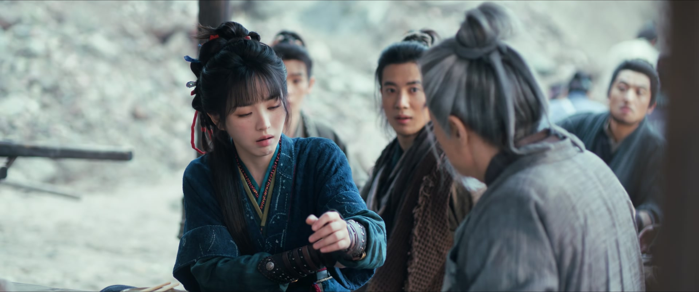
长玉问太傅：水坝为何赶在暴雨前修好，暴雨之后咱们是不是就能走了。太傅摆架子：何为拜师？一没束脩，二没磕头，老夫凭什么教你？
长玉本要作罢，一听「一掷千金求他收徒」，眼睛一亮：老爷子，我爱学习，我拜你为师！太傅却不买账：你爱学习？老夫我还不爱教呢！
长玉替他揉伤腿，太傅反手替她扎治，又送她一只锦囊：等我不在的时候再打开，这就是那个锦囊妙计。他转身与将军再议溃坝：按老夫之计在四处作业，官兵和劳役死一半，另一半即可获救——此乃仁义之策。劳役们笑他今日怎么不之乎者也了，他骂骂咧咧，转头又教起他们来。
关键台词 · KEY QUOTES
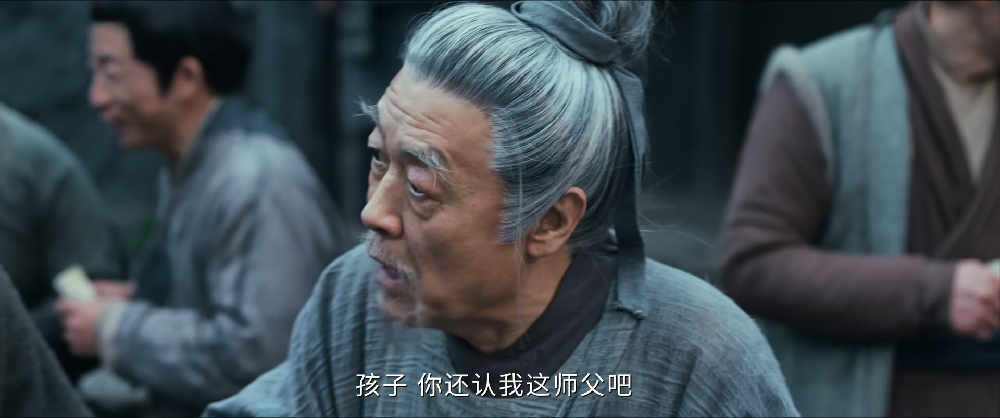
官兵突然宣布：前线战事吃紧，需抽调部分人手增援。是走是留，抽签决定——抽到走的今日随军撤离，抽到留的继续留下。一时间，人人自危。
劳役们一听就炸了锅：上战场是要送死的，留下还能有口饭吃。可谁都不识字，有人把「留」认成了「走」，一群人虚惊一场，个个庆幸留了下来。
太傅却开口：老夫能用我这走签，换你的留签吗？众人怒骂他拿小姑娘往刀口上送。长玉气过之后却答应下来：出去能找妹妹，一身功夫也不怕上战场。她认下这个师父，众人瞠目结舌。
关键台词 · KEY QUOTES
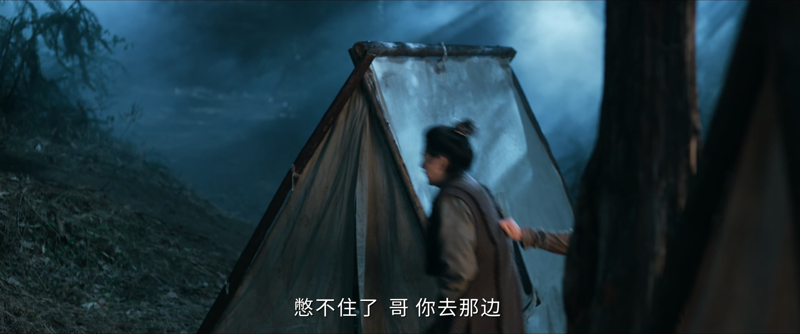
走签的队伍随军开拔。长玉想着出去能找妹妹，脚下生风，可一路越走越不是滋味——那个总骂她的老头，真的只是贪生怕死吗？这念头一冒出来，就再也压不下去。
夜里扎营，同伴的话让她如遭雷击：那个太傅老头也留下了，也跟那丫头换了签——老吴，这都是命啊。原来抽签一事，处处透着蹊跷。
有人压低声音：大师姐，我们挖渠的时候偷听了官兵说话——留下来那才是送命呢！就是说，老人家留下来，是等死呢。此话一出，四下死寂。
长玉这才明白：师父把生路让给了自己，怕她不识字，还特意留了话。她望着来路，喃喃道：没想到那老头脾气坏，却是个好人。眼眶一热，几乎落下泪来。
关键台词 · KEY QUOTES
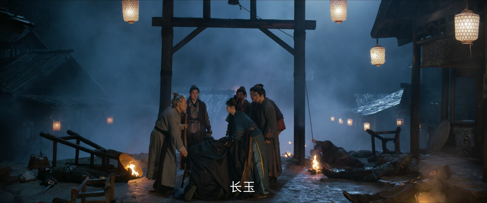
长玉连夜折返。太傅见她真的回来了，又惊又痛，声音都颤了：你回来是想救我……你回来是想救我！她明明已经拿着走签走远了，却偏偏不肯丢下这个师父。
长玉红了眼：我已经失去太多亲人了，我受不了了。从今日起，你们都得跟我活下去！她逼着众人速速离开——天一亮，这里就要横尸遍野。
真相揭开：溃坝放水是为灭敌——坝下两军即将开战，水淹其军才有一线生机。可前锋军提前察觉，唐将军被打了个措手不及，消息一旦传出，武安侯的诱敌之策必然失败，庐城破城、济州不保、天下大乱。
太傅「聊发少年狂」，带着众人追向后山——有三只斥候脱逃，绝不能让消息传出去。长玉认出当年骗她入营、害她被误抓进采石场的斥候，众人分头堵截。
关键台词 · KEY QUOTES
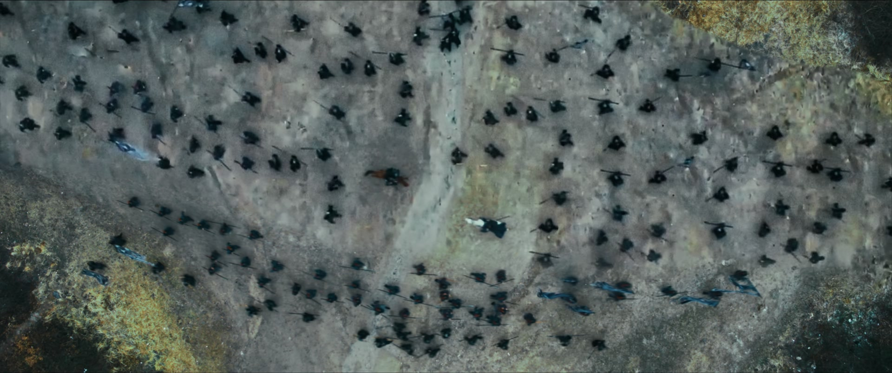
隋元卿大军压境，扬言唐将军、武安侯出来受死。被劫为人质的长宁被押在阵前，敌将调笑：要是你老子没来救你，干脆留在我们长信王府，给我儿子当个小丫鬟。
战鼓一响，谢征亲至。有敌兵啧啧称奇：还道侯爷千金之躯，不会亲临战场呢。他偏偏只带千人，就敢闯这万军之阵，己方军心为之一振，阵前杀声震天。
乱阵中，长宁情急喊出「姐夫！姐夫救我！」——一句姐夫，让隋元卿恍然大悟：她不是武安侯的女儿。他翻脸就要把她扔下马，让马蹄把她踏死。
谢征纵马杀入重围，直取隋元卿。刀光与马蹄之间，人质就在咫尺——千军万马之中，他要护的是那条人命，整盘坝下之局，成败都系于这一冲一救。
关键台词 · KEY QUOTES
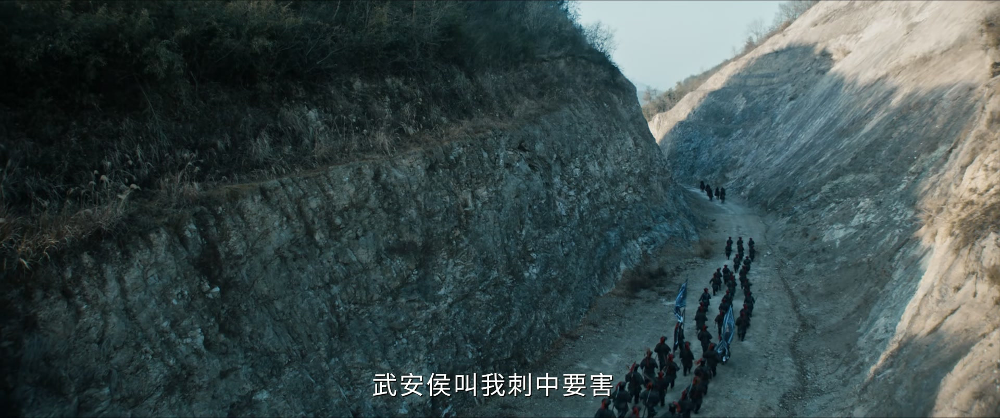
乱军中，长玉也下了场，擒下一个求饶的小兵：娘子饶命！我就是个小兵，之前是奉命行事，我什么事都不知道！她头一回以战士的身份站在阵前，下手却稳得很。
隋元卿一枪刺向谢征，谢征不躲不闪，竟没有倒下——隋世子的枪，是用蜡做的吗？下次记得用铁的！满场哗然，隋元卿的脸色登时铁青，握枪的手都在发抖。
隋元卿恼羞成怒：你不过千余人嘛，我的兵会追你到天涯海角，不死不休！谢征却只回一句：时辰差不多了。这话没头没尾，却让隋元卿心里一沉。
轰——坝下之水决堤而下，数十万大军尽葬洪流。谢征回头问隋元卿：世子，懂水吗？片尾曲起，硝烟散尽。长玉从采石场一路走到阵前，女将的路，才刚刚开始。
关键台词 · KEY QUOTES
采石场苦役中凭爹爹教的腰马合一立足，拜太傅为师得锦囊；抽签赴前线寻妹，得知真相后折返救人，认出逃走的敌军斥候并率众追捕，阵前擒下敌兵，踏上战场。
布下坝下诱敌之策，亲率一千济州军赴险；阵前救下长宁，被刺不倒，反嘲隋元卿「蜡做的枪」；算准时辰，坝水决堤一举灭敌。
挟持长宁为人质，扬言以武安侯之死成就自己的「坝下传说」；轻敌冒进，最终数十万大军尽葬坝水。
被隋元卿劫为人质，对方误以为她是武安侯之女；阵前情急唤出「姐夫」身份败露，险被扔下马，终被谢征救回。
为坝下灭敌主持溃坝凿眼，力主保全半数劳役的「仁义之策」；与长玉结为师徒，抽签时以命换命，最后「聊发少年狂」赴险堵截斥候。
奉命主持坝下凿眼，被敌军前锋军察觉遭袭，得长玉与众人救援，力保溃坝之计不失。
暗中策应家人脱身，遭大公子拷问仍以军务自证清白；其母与小主子被贼王掳走一事，成为山庄疑云。
太傅用走签换走长玉的留签，被众人骂作自私；直到队伍走远，长玉才知留下的人都在等死——这支签换的，是一条命。
长玉折返救太傅，红着眼喊出这句话。屠户女的狠劲之下，是滚烫的人情。
谢征被刺不倒，一句嘲讽立住天赐将军的威风，也把隋元卿的必胜之局踩进了泥里。
长宁阵前一声「姐夫」，揭穿了人质并非武安侯之女，也让谢征与樊家的羁绊在万军阵前摊开。
时辰一到，坝水决堤，数十万大军葬身洪流。以千人对十万的诱敌之策，收官于一句问水。
太傅留给长玉一只锦囊，嘱她「等我不在的时候再打开」——里面藏着怎样的后手，又将在何时派上用场？
太傅一句「不破敌寇，死溃坝」，把自己留在了最凶险的坝下。他能否生还，师徒能否重逢？
从采石场到阵前，长玉第一次以战士的身份擒下敌兵。女将之路，自此开启。
长玉被误抓进采石场，是因为有人骗了她——设局之人是谁？背后是否连着魏严与长信王的棋局？
数十万大军尽葬坝水，长信王世子惨败。长信王与朝中魏严的报复，将把战火烧向更远的地方。